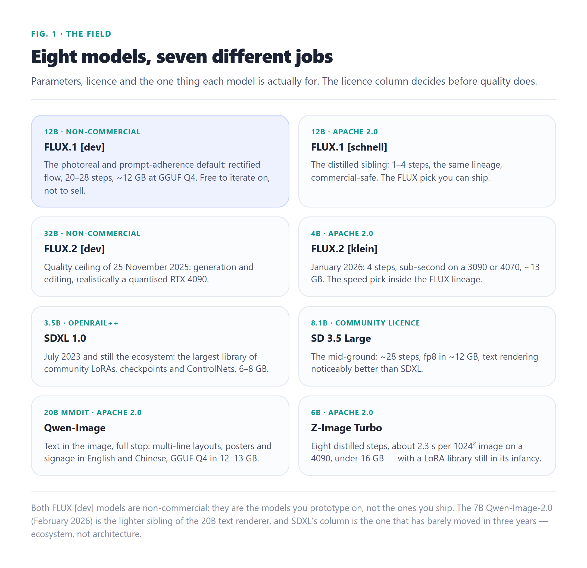
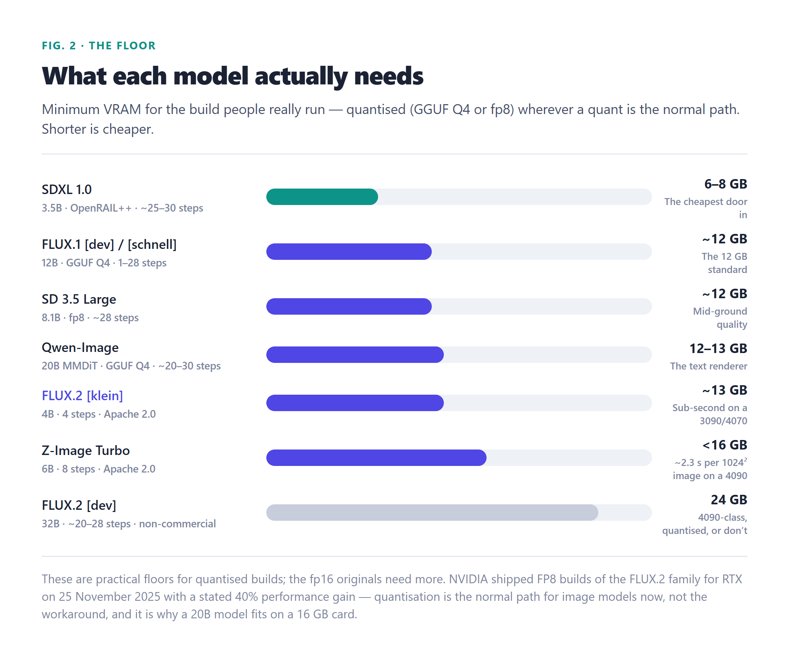

32B
FLUX.2 [dev] — the quality ceiling
Eight open-weight models, one GPU, no per-image bill. FLUX for prompt adherence, Qwen-Image for words in the pixels, SDXL for the LoRA ecosystem — and two licences hiding in the middle of the list that decide what you are actually allowed to ship. All of it runs on hardware you already own.
Language models raced ahead. Diffusion quietly stayed in reach.
There is a recurring disappointment in local AI: you download the open weights, run the benchmark, and discover the frontier is still a generation ahead. Chat models are the obvious case — the gap narrows every release but it is still there. Image generation is the exception, and it is worth saying plainly why: the best open-weight image models of 2026 are not a cheap imitation of the closed ones. They are the models professionals already use, and the thing standing between them and your GPU is a licence file and about twelve gigabytes of VRAM.
The economics are almost boring. A closed image API charges per image; a local model charges for electricity once. If you iterate — and image work is nothing but iteration, twenty generations to find the one — the per-image fee is not a cost, it is a tax on experimentation. Everything in this guide runs on one consumer card, in ComfyUI or a similar runner, with no cloud account and no usage logging.
Parameters, release dates, licences and the VRAM people actually run them at.
One table first, because most decisions end here. Parameter counts, licences and release dates come from each model’s own model card; the VRAM column is the practical floor for the quantised build (GGUF Q4 or fp8) rather than the fp16 original, since that is what people run on consumer cards.
| Model | Params | Released | Licence (commercial?) | Min VRAM | Best at |
|---|---|---|---|---|---|
| FLUX.1 [dev] | 12B | Aug 2024 | FLUX [dev] Non-Commercial | ~12 GB (Q4) | Prompt adherence, photorealism |
| FLUX.1 [schnell] | 12B | Aug 2024 | Apache 2.0 ✓ | ~12 GB (Q4) | Fast and commercial-safe |
| FLUX.2 [dev] | 32B | 25 Nov 2025 | FLUX Non-Commercial | 24 GB (quantised) | Highest quality, image editing |
| FLUX.2 [klein] | 4B | Jan 2026 | Apache 2.0 ✓ | ~13 GB | Sub-second generation |
| SDXL 1.0 | 3.5B | Jul 2023 | CreativeML OpenRAIL++-M ✓ | 6–8 GB | LoRA and style breadth |
| SD 3.5 Large | 8.1B | Oct 2024 | Stability Community ✓ | ~12 GB (fp8) | Mid-ground quality |
| Qwen-Image | 20B | Aug 2025 | Apache 2.0 ✓ | 12–13 GB (Q4) | Readable text in the image |
| Z-Image Turbo | 6B | 27 Nov 2025 | Apache 2.0 ✓ | <16 GB | Speed on a modest card |

Two patterns jump out. The FLUX family splits in half by licence: the two [dev] models are non-commercial and the two you would most want to ship — schnell and klein — are Apache 2.0, which is not an accident but Black Forest Labs’ business model: open the fast distilled weights, license the frontier. And age barely matters: SDXL is the oldest and smallest model here, three years old in a field where everything else arrived in the last eighteen months, and it still wins its column outright.
Two models in that table cannot produce images you may sell. Here is how to remember which.
Licences in this space are not paperwork, they are the first branch of the decision tree. An image model that cannot be used commercially is not a cheaper model — it is a prototype tool, and everything you make with it is a draft.
| Tier | Models | What it means |
|---|---|---|
| Sell freely | FLUX.1 [schnell], FLUX.2 [klein] 4B, Qwen-Image, Z-Image Turbo (Apache 2.0) | Commercial use is granted by the weights licence itself — no revenue ceiling, no attribution gymnastics. |
| Sell on stated terms | SDXL 1.0 (CreativeML OpenRAIL++-M), SD 3.5 Large (Stability Community License) | Commercial use permitted under each licence’s own conditions — read them once before shipping, they differ. |
| Prototype only | FLUX.1 [dev], FLUX.2 [dev] | Weights are free to download and run; the licence forbids commercial use. The best two models on raw quality, both of them. |
The one capability where local models stopped matching and started winning.
Ask any diffusion model for an image containing words — a poster, a sign, an infographic — and older models garble the letters the moment the string gets long. This is the capability where the open field is not merely competitive but ahead: Qwen-Image, a 20B multimodal diffusion transformer open-sourced on 5 August 2025, was engineered specifically for native text rendering.
It handles multi-line layouts, paragraph-level text, posters and signage in both alphabetic languages and logographic ones — English and Chinese — far more reliably than any FLUX or SD model, where letters dissolve in longer strings. It is Apache 2.0, so the output is yours to sell, and community GGUF quants bring it to 12–13 GB at Q4, which fits a 16 GB card. The trade is speed: at 20B and roughly 20–30 steps it is the slowest model in this guide, so drafts on something distilled and final renders here.
If your work is graphic-design-adjacent at all — ads, thumbnails, anything with words baked into the pixels — Qwen-Image is the model to reach for, and the lighter 7B Qwen-Image-2.0 of February 2026 is the faster sibling to reach for afterwards.
Diffusion cost is steps × model size. Two 2026 releases cut both factors at once.
The wall-clock time of an image is not mysterious: cost scales with step count multiplied by model size. A four-step 4B model does a small fraction of the work of a 28-step 32B one, and the ranking below reflects that arithmetic more than any quality difference. Two releases in the 2026 window changed the calculus for modest GPUs:

Published VRAM floors deserve one honest footnote: sources disagree by a gigabyte or two because they count different things. FLUX.2 [klein] is quoted at about 8 GB in some roundups and about 13 GB in others — the difference is whether the text encoders are inside the number. Treat the figures as bands, not boundaries, and expect a quantised build to land at the lower end of its band.
Why the oldest model in this guide refuses to die.
Every year a new base model arrives with better prompt adherence, and every year SDXL keeps the crown for something the benchmarks do not measure: the ecosystem. Released July 2023 under the permissive CreativeML OpenRAIL++-M licence, it accumulated the largest library of community LoRAs, fine-tuned checkpoints and ControlNets of any local model by a wide margin. Want a specific aesthetic, a character, a niche style? It almost certainly already exists for SDXL and almost certainly does not for FLUX.2 or Qwen-Image.
That is a real capability, not nostalgia: style breadth is the axis where new models are weakest (their LoRA libraries are measured in months, SDXL’s in years), and it is why a 3.5B model from 2023 still sits in the pick-by-job table for stylised work. Raw prompt adherence trails FLUX and native text rendering is weak — but for LoRA-driven, ControlNet-controlled work at 6–8 GB, nothing in this guide displaces it.
The runner matters as much as the model here. ComfyUI — a node graph where you connect model, text encoder, prompt and sampler as explicit edges — is how every current model and quantised workflow ships first; the FLUX.2 FP8 builds target it directly. Automatic1111 and its Forge fork remain the simpler path for the SDXL-class stack, and InvokeAI is the most polished interface of the three. All of them are local processes over your own GPU.
The thing that made 20B and 32B models a consumer proposition.
The VRAM column in chapter 2 is only that low because of quantisation, and it is worth being explicit about the mechanism since it is the same trick the rest of this site covers for language models. Diffusion weights compressed to GGUF Q4 or fp8 lose very little visible quality — the guardrails on the optimiser we run for these images (mean pixel difference under 2.5 of 255, size reduction of at least 15% before a quant is accepted) are the same instinct applied at page scale — and they take a 20B model from “workstation” to “16 GB card”.
The hardware vendors noticed: NVIDIA shipped FP8 builds of the FLUX.2 family for RTX GPUs on 25 November 2025, stating a 40% performance gain alongside the VRAM reduction, delivered for ComfyUI. That is the moment quantisation stopped being a workaround and became the distribution format. If you want the full vocabulary — GGUF versus EXL2 versus AWQ versus GPTQ, and which to pick per hardware tier — this site has the standalone guide.
A node graph for production, a Python pipeline for scripts.
The interactive path is ComfyUI: install it, drop a quantised checkpoint into the models directory, load a workflow. For automation — batch renders, a service behind an API — the same models come up through diffusers in a few lines. FLUX.1 [schnell] is the right first pipeline because it is Apache 2.0 and distilled to four steps:
# FLUX.1 [schnell]: Apache 2.0, 4 steps, ~12 GB at Q4 / ~24 GB fp16
pip install diffusers transformers accelerate
import torch
from diffusers import FluxPipeline
pipe = FluxPipeline.from_pretrained(
"black-forest-labs/FLUX.1-schnell", torch_dtype=torch.bfloat16
)
pipe.enable_model_cpu_offload() # keeps a 16-24 GB card happy
image = pipe(
"a wireframe illustration of a home server rack, technical drawing style",
height=1024, width=1024,
guidance_scale=0.0, # schnell is distilled: no CFG
num_inference_steps=4, # four steps, not twenty-eight
).images[0]
image.save("output.png")Two details in that snippet are load-bearing. guidance_scale=0.0 is not a typo — distilled FLUX builds skip classifier-free guidance, which is where much of the speedup hides. And enable_model_cpu_offload() moves layers between CPU and GPU so that a model whose weights exceed your VRAM still completes, at the cost of some speed. For GGUF checkpoints specifically, ComfyUI’s GGUF loader (or the gguf diffusers extension) is the standard route; the quantised community builds of Qwen-Image and FLUX ship there first.
The shortest useful table in the article.
| If you want… | Use | Why |
|---|---|---|
| Best prompt adherence and photorealism, non-commercial | FLUX.1 [dev] | The consensus all-round quality pick since Aug 2024 — prototype only |
| Sell what you generate, same lineage | FLUX.1 [schnell] or FLUX.2 [klein] | Apache 2.0 distilled builds: fast, commercial-safe, same DNA |
| Readable words, posters, signage | Qwen-Image | 20B MMDiT built for text rendering, English and Chinese, Apache 2.0 |
| Anime, a style, a character LoRA | SDXL 1.0 | The largest LoRA/ControlNet library by a wide margin, 6–8 GB |
| Drafts in under a second | Z-Image Turbo or FLUX.2 [klein] | 8 and 4 distilled steps; both Apache, both 12–16 GB cards |
| Mid-ground quality with a mature pipeline | SD 3.5 Large | 8.1B at ~12 GB fp8, text rendering well above SDXL |
| The absolute ceiling, licence permitting | FLUX.2 [dev] | 32B generation and editing on a quantised 4090 — non-commercial |
| Image editing, not just generation | FLUX.2 [dev] | The 32B family supports editing as well as generation — same licence caveat |
The five questions that come up every time.
For raw quality and prompt adherence, FLUX.1 [dev] (12B) is the best all-round local model — but its licence is non-commercial, so it is the model you prototype on. To sell what you generate, FLUX.1 [schnell] and FLUX.2 [klein] 4B are Apache 2.0, SDXL is OpenRAIL++-M, SD 3.5 is under Stability’s Community License and Qwen-Image is Apache 2.0. If you need readable words in the image, nothing local beats Qwen-Image.
With the Apache 2.0 models — FLUX.1 [schnell], FLUX.2 [klein] 4B, Qwen-Image, Z-Image Turbo — yes. SDXL’s CreativeML OpenRAIL++-M and SD 3.5’s Community License permit commercial use on their stated terms. The two exceptions are FLUX.1 [dev] and FLUX.2 [dev], both under non-commercial licences: free to iterate on, not to sell from. Always read the weights licence, not the model’s marketing.
SDXL runs in 6–8 GB, which is the cheapest door in. The practical standard for the 12B–20B class is about 12–13 GB with GGUF Q4 or fp8 quantisation — a 16 GB card covers FLUX.1, SD 3.5 Large, Qwen-Image and Z-Image Turbo comfortably. The 32B FLUX.2 [dev] wants a quantised 24 GB RTX 4090 class card. Published floors vary by a gigabyte or two depending on whether text encoders are counted.
Qwen-Image, a 20B multimodal diffusion transformer released under Apache 2.0 in August 2025. It handles multi-line layouts, posters and signage in English and Chinese where FLUX and SD models garble longer strings. The 7B Qwen-Image-2.0 of February 2026 is the lighter sibling; SD 3.5 Large and the FLUX.2 family are reasonable runners-up.
ComfyUI. It is a node graph, which sounds harder and is actually how every current model, quantisation and control workflow ships first — the FLUX.2 family’s FP8 builds target it directly. Automatic1111 and its Forge fork remain the simpler path for the SDXL-class stack, and InvokeAI offers the most polished interface. All three run entirely on your own GPU.
Where each claim came from.
| # | Source | Used for |
|---|---|---|
| 1 | LocalAIMaster, Best Local AI Image Models 2026: FLUX vs SDXL vs Qwen (20 Jun 2026) | The specification table: parameters, licences, release dates, practical VRAM floors, step counts and the Z-Image/klein timing figures |
| 2 | Black Forest Labs repositories and model cards (FLUX.1 [dev] / [schnell], FLUX.2 [dev] / [klein]) | The licence split between the [dev] and Apache tiers, parameter counts, and the 25 Nov 2025 / Jan 2026 release dates |
| 3 | Qwen-Image model card and repository (5 Aug 2025); Qwen-Image-2.0 (Feb 2026) | The 20B MMDiT architecture, Apache 2.0 licence and the text-rendering claims in chapter 4 |
| 4 | Alibaba Tongyi Z-Image Turbo release (27 Nov 2025) | 6B parameters, 8-step distillation, the ~2.3 s / 1024² / RTX 4090 figure and the under-16 GB design target |
| 5 | Stability AI: SDXL CreativeML OpenRAIL++-M licence; SD 3.5 Large (Oct 2024) Community License | The SDXL column, its July 2023 date, and the commercial terms in chapter 3 |
| 6 | NVIDIA blog, FLUX.2 image generation models now released (25 Nov 2025) | The FP8 RTX builds, the stated 40% performance gain, and ComfyUI as the delivery target |
| 7 | Thundercompute, Best Open-Source Image Generation Models (2026) (26 Jun 2026) | Cross-check on FLUX.2 [klein]’s VRAM floor — the source of the band-versus-boundary footnote in chapter 5 |
| 8 | ComfyUI, Automatic1111, Forge and InvokeAI repositories | The runner comparison in chapters 6 and 10 |
| 9 | This site, GGUF vs EXL2 vs AWQ vs GPTQ | The quantisation vocabulary and the pick-per-hardware-tier guidance referenced in chapter 7 |
| 10 | This site, Text-to-Speech & Speech-to-Text Models 2026 | The sibling modality guide — same licence-first method applied to voice |
Assembled 6 October 2026. Licences change: the FLUX tier structure and Stability’s community terms have both moved before and will move again, so re-read the weights licence before shipping, not this page. VRAM figures are practical floors for quantised builds on consumer cards and vary with text encoders, attention implementation and how much headroom your runner keeps. Step counts and timings are each project’s own published figures except where noted; we did not re-benchmark eight models on one card, and the ordering — not the absolute seconds — is what carries to your hardware.
Tell me what you’re working on and I’ll help you work through it — where you got stuck, what you’re trying to build, which model to pick. Your message arrives with this article attached, so I’ll know exactly what you’re reading.